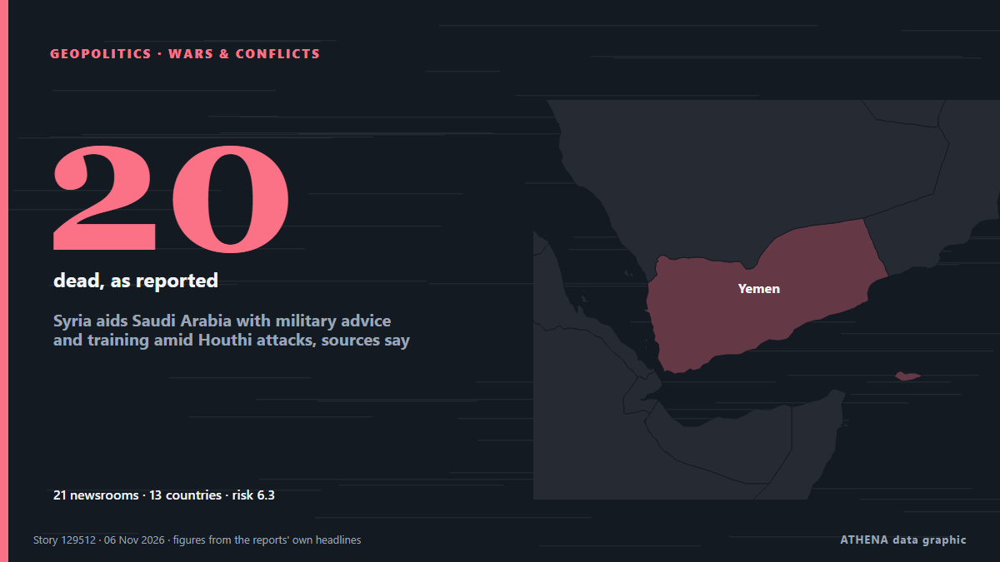

Syria aids Saudi Arabia with military advice and training amid Houthi attacks, sources say

Joint training exercises were under way and more were planned in both security and defence. from The Straits Times
Reported independently by 21 outlets in 13 countries since 5 Nov, first by Khaama Press; coverage is fading. ATHENA rates the risk high (6.3/10), driven mainly by the severity of the harm described and its geographic and sector reach. Confidence is 91% (high), with 21 independent outlets corroborating it and an average source reliability of 78%. Outlets by country: Israel (5), United States (4), Pakistan (3). Coverage: 5 Nov to 6 Nov, 35 hours.
Why it matters: The Red Sea and the Bab el-Mandeb strait form the shortest sea route between Asia and Europe, through the Suez Canal. Attacks on merchant ships push carriers to sail around Africa, adding time and cost to world trade.
What changed: 17 new reports from 16 outlets in the 24 hours to 6 Nov.
First reported as: Houthis named $51B price, recognition to halt attacks on Saudi Arabia
At a glance
Selected, scored and written by ATHENA's published methodology. No editor intervenes in individual events. How this is produced ›
| 05 Nov 09:31 UTC | 4 |
|---|---|
| 05 Nov 11:31 UTC | 1 |
| 05 Nov 13:31 UTC | 2 |
| 05 Nov 15:31 UTC | 1 |
| 05 Nov 17:31 UTC | 3 |
| 05 Nov 19:31 UTC | 0 |
| 05 Nov 21:31 UTC | 2 |
| 05 Nov 23:31 UTC | 0 |
| 06 Nov 01:31 UTC | 1 |
| 06 Nov 03:31 UTC | 0 |
| 06 Nov 05:31 UTC | 0 |
| 06 Nov 07:31 UTC | 1 |
| 06 Nov 09:31 UTC | 0 |
| 06 Nov 11:31 UTC | 0 |
| 06 Nov 13:31 UTC | 1 |
| 06 Nov 15:31 UTC | 5 |
| 06 Nov 17:31 UTC | 5 |
| 06 Nov 19:31 UTC | 2 |
| 05 Nov 09:40 UTC | 0.0 |
|---|---|
| 05 Nov 11:11 UTC | 2.1 |
| 05 Nov 14:30 UTC | 4.0 |
| 05 Nov 16:30 UTC | 4.9 |
| 06 Nov 04:23 UTC | 6.2 |
| 06 Nov 20:37 UTC | 6.3 |
Why these numbers
Importance
Risk
Confidence
The reporting — who reported it, and when
headline as published · opens the original- Khaama Press · AfghanistanHouthis Demand $51 Billion and Recognition from Saudi Arabia to End Hostilities: Report
- Türkiye Today · TurkeyHouthis named $51B price, recognition to halt attacks on Saudi Arabia
- Kurdistan24 (English) · IraqWSJ: Houthis Demand $51 Billion From Saudi Arabia
- Arab Times · KuwaitIran-Backed Houthis Demand $51 Billion From Saudi Arabia to End Hostilities
- AzerNews · AzerbaijanHouthis demand $51 billion from Saudi Arabia to end military operations
- The Jerusalem Post · IsraelSaudi Arabia, Syria sign military, financial pacts in Riyadh as ties between countries deepen
- Gulf News · United Arab EmiratesWhy are Yemen’s Houthis demanding $51 billion from Saudi Arabia to end the war?
- The Jerusalem Post · IsraelYemen gov’t tightens import controls as Houthis reportedly demand $51 billion from Saudi Arabia
- Express Tribune · PakistanSaudi Arabia dismisses WSJ report on Houthi demands for $51b, recognition
- The New Arab · INTHouthis sought $51bn in compensation, Saudi recognition: report
- Arab News · Saudi ArabiaSaudi official denies WSJ report that Houthis demanded $51bn from Kingdom
- Los Angeles Times (World) · United StatesAs missiles hit Saudi Arabia, residents insist life goes on — and the show does too
- Los Angeles Times (World) · United StatesSaudi Arabia faces a grim choice as Houthis intensify attacks on airports and oil sites
- The Business Standard (Bangladesh) (working feed) · BangladeshHouthis sought $51 billion, recognition as Yemen's rulers from Saudi Arabia to end war: Report
- Dawn · PakistanSaudi Arabia denies WSJ report claiming Houthis demanded $51bn to halt hostilities
- Breaking Defense · United StatesSaudi Arabia inks first defense ‘cooperation’ agreement with Syria’s new leadership
- The Straits Times · SingaporeSyria aids Saudi Arabia with military advice and training amid Houthi attacks, sources say
- Business Recorder · PakistanSyria aids Saudi Arabia with military advice and training amid Houthi attacks, sources say
- Al-Monitor · United StatesSyria aids Saudi Arabia with military advice and training amid Houthi attacks, sources say
- Türkiye Today · TurkeyAt least 20 killed in Yemen market attack as Houthis blame Saudi Arabia
- Middle East Eye · INTSyria sends military advisers to Saudi Arabia amid Houthi attacks, sources say
- The Jerusalem Post · IsraelSyria aids Saudi Arabia with military advice, training amid Houthi attacks, sources say
- Khaama Press · AfghanistanSyria Deploys Military Advisers and Trainers to Bolster Saudi Defences Against Houthis
- Haaretz (English) · IsraelSyria aiding Saudi Arabia with military advice and training amid Houthi attacks, sources say
- Kurdistan24 (English) · IraqSyria Provides Military Support to Saudi Arabia Against Houthis
- Israel Hayom (English) · IsraelReport: Syria sends military personnel to help Saudi Arabia counter Houthis
- TASS (English) · RussiaSyria sends instructors to Saudi Arabia to share combat experience — TV
- The New Arab · INTSyria aids Saudi Arabia with military advice and training